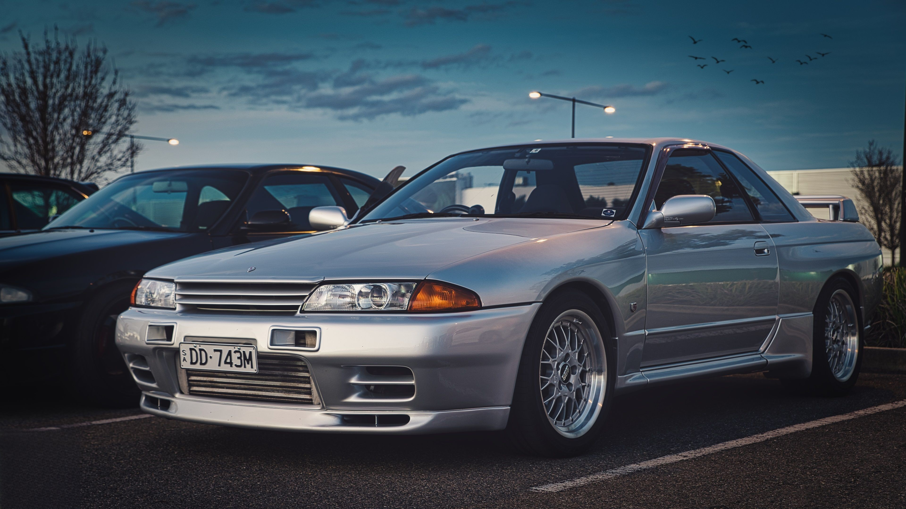

Apelidado carinhosamente de "Godzilla", o Nissan Skyline GT-R R32 é um verdadeiro monstro japonês. Em 1989, o GT-R foi lançado com o motor RB26DETT e tração integral durante um período que, na Japanese Touring Car Championship (JTCC), carros japoneses não obtinham sucesso há tempos, e isso mudou com a introdução do GT-R na competição. Já em 1989, o R32 ganhou 29 corridas em sequência e, em 1990, participou da Australian Touring Car Championship, ganhando todos os títulos nos próximos dois anos e também o apelido de Godzilla. Apesar de seu tremendo sucesso nas corridas, o GT-R é um carro de rua, que, na época, superou em 25 segundos o menor tempo de carros de produção em massa no circuito de Nurburgring e, quando comparado a carros de preço semelhante, não possuia nenhuma desvantagem. O sucesso estrondoso na JTCC e seu preço acessível garantiram ao Godzilla o título de um dos carros japoneses mais icônicos e impactantes já feitos e que será eternamente lembrado como um monstro das pistas.